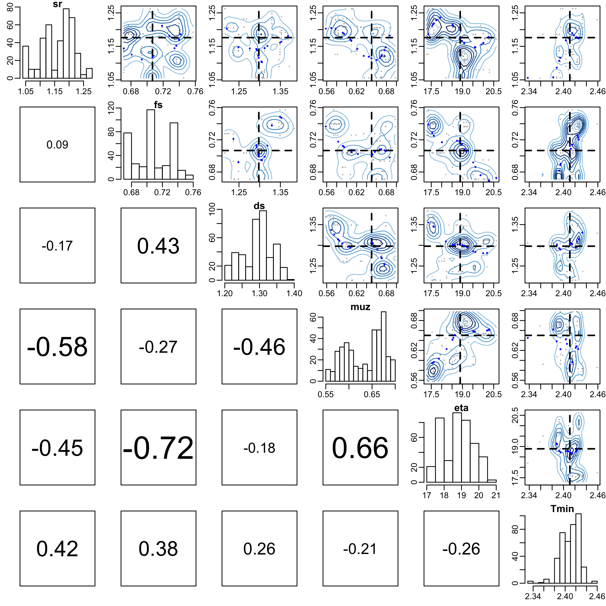
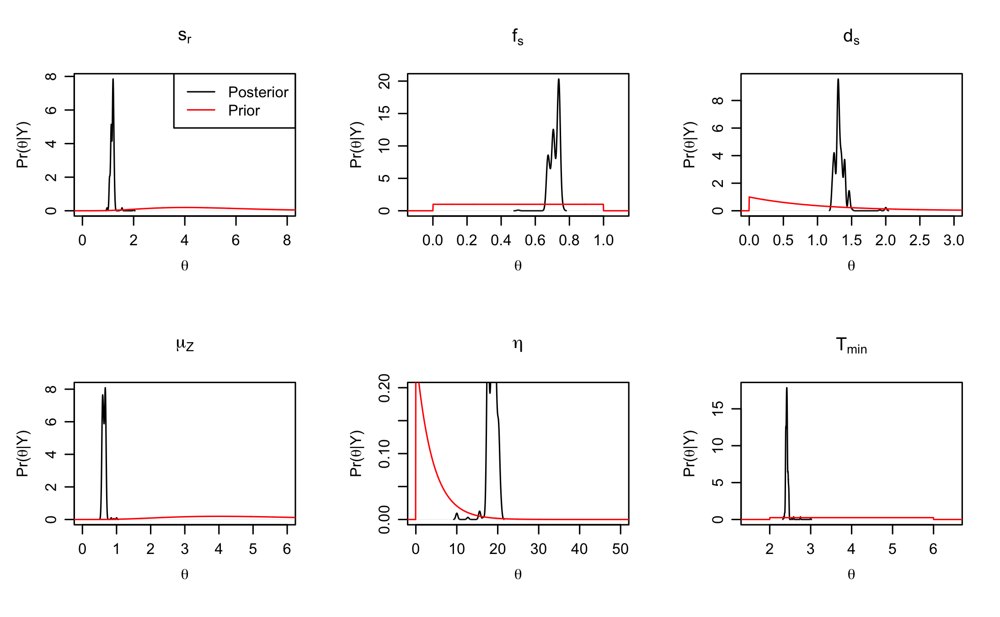
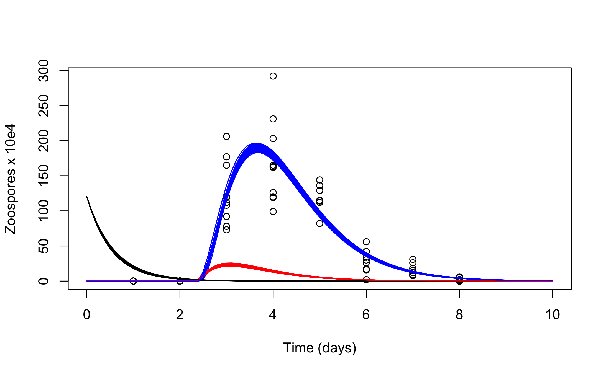

Bayesian inference for a population growth model of the chytrid fungus
Philipp H Boersch-Supan, Sadie J Ryan, and Leah R Johnson
September 2016
Source:vignettes/chytrid_dede_example.Rmd
chytrid_dede_example.Rmd#Preliminaries
This vignette illustrates the steps needed to perform inference for a DDE model of population growth in a fungal pathogen. A detailed description of the rationale behind the Bayesian inference approach for differential equations can be found in the paper describing the deBInfer package (Boersch-Supan et al. 2017).
This example assumes that deBInfer is installed and loaded. If this is not the case it needs to be installed from CRAN:
install.packages("deBInfer")Development versions of deBInfer are available on github, and can be installed using the devtools package (Wickham & Chang 2016).
if (require("devtools")){
#install deBInfer from github
devtools::install_github("pboesu/debinfer")
}#The chytrid population growth model Our example demonstrates parameter inference for a DDE model of population growth in the environmentally sensitive fungal pathogen Batrachochytrium dendrobatidis (Bd), which causes the amphibian disease chytridiomycosis (Voyles et al. 2012; Rosenblum et al. 2010). This model has been used to further our understanding of pathogen responses to changing environmental conditions. Further details about the model development, and the experimental procedures yielding the data used for parameter inference can be found in (Voyles et al. 2012).
The model follows the dynamics of the concentration of an initial cohort of zoospores, \(C\), the concentration of zoospore-producing sporangia, \(S\), and the concentration of zoospores in the next generation \(Z\). The initial cohort of zoospores, \(C\), starts at a known concentration, and zoospores in this initial cohort settle and become sporangia at rate \(s_r\), or die at rate \(\mu_Z\). \(f_s\) is the fraction of sporangia that survive to the zoospore-producing stage. We assume that it takes a minimum of \(T_{min}\) days before the sporangia produce zoospores, after which they produce zoospores at rate \(\eta\). Zoospore-producing sporangia die at rate \(d_s\). The concentration of zoospores, \(Z\), is the only state variable measured in the experiments, and it is assumed that these zoospores settle (\(s_r\)) or die (\(\mu_Z\)) at the same rates as the initial cohort of zoospores.
DDE model
The equations that describe the population dynamics are as follows:
\[\begin{align} \frac{dC}{dt} &= -(s_r +\mu_Z) C(t) \\ \frac{dS}{dt} &= s_r f_s C(t - T_{min})-d_s S(t)\\ \frac{dZ}{dt} &= \eta S(t) - (s_r+\mu_Z) Z(t) \end{align}\]
We can implement this system of differential equations for the deSolve::dede solver as follows. More details on how to specify differential equations for this solver can be found in the package documentation and vignettes (Soetaert et al. 2010).
#dede version
CSZ.dede<-function(t,y,p){
sr <- p["sr"]
fs <- p["fs"]
ds <- p["ds"]
eta <- p["eta"]
Tmin <- p["Tmin"]
muz <- p["muz"]
Rs <- Ms <- 0
lag1 <- lag2 <- 0
if (t>Tmin) {
lag1 <- lagvalue(t - Tmin)
Rs <- sr * fs * lag1[1]
}
phiZ <- eta * y[2]
dy1 <- -(muz + sr) * y[1]
dy2 <- Rs - Ms - ds * y[2]
dy3 <- phiZ - (muz + sr) * y[3]
if(y[1]<0) dy1<-0
if (y[2] < 0) {
dy2 <- Rs - Ms
dy3 <- -(muz + sr) * y[3]
}
if (y[3] < 0) {
dy3 <- dy3 + (muz + sr) * y[3]
}
list(c(dy1,dy2,dy3))
}Observation model
Even though the data used in this example come from an experimental study, the system is only partially observed. We know the initial conditions for all states, but we only have observations for the second generation of Zoospores \(Z\). Because the observations are counts (i.e. discrete numbers), we assume that observations of the system at a set of discrete times \(t'\) are independent Poisson random variables with a mean given by the solution of the DDE, at times \(t'\).
The observations are provided with deBInfer. They can be loaded with the data() command.
## time count
## 1 1 0
## 2 1 0
## 3 1 0
## 4 1 0
## 5 1 0
## 6 1 0
The log-likelihood of the data given the parameters, underlying model, and initial conditions is then a sum over the \(n\) observations at each time point in \(t'\) \[\begin{equation} \ell(\mathbf{Z}|\mathbf{\theta})=\sum\limits^n_{t}Z_t \text{ log }\lambda-n\lambda \end{equation}\]
This can be translated into an observation model function for deBInfer. The observation model function must have three named arguments data, sim.data, and samp, as these are used by the MCMC procedure to pass in the data (as a data.frame, i.e. indexed using the $ operator and the column names of the input data), the current state of the Markov chain (as a named vector), and the associated DE model solution (as a matrix-like object of class deSolve, i.e. indexed using the [ ] operator and the declared names of the state variables). We can access these inputs to define the data likelihood. In this case we have repeat measurements for each time point, so we iterate over the unique timepoints in data$time, and then calculate the sum log-likelihood over all matching data$count observations using the current value of the state variable \(Z\) from the DE model solution at this point in the Markov chain.
# observation model
chytrid_obs_model <- function(data, sim.data, samp) {
ec <- 0.01
llik.Z <- 0
for(i in unique(data$time)){
try(llik.Z <- llik.Z + sum(dpois(data$count[data$time == i],
lambda = (sim.data[,"Z"][sim.data[,"time"] == i] + ec),
log = TRUE)))
}
llik <- llik.Z
return(llik)
}Following Johnson et al. (2013) we employ a small correction ec that is needed because the DE solution can equal zero, whereas the parameter lambda of the Poisson likelihood must be strictly positive.
Parameter declaration
We continue by defining the parameters for inference
sr <- debinfer_par(name = "sr", var.type = "de", fixed = FALSE,
value = 2, prior = "gamma", hypers = list(shape = 5, rate = 1),
prop.var = c(3,4), samp.type = "rw-unif")
fs <- debinfer_par(name = "fs", var.type = "de", fixed = FALSE,
value = 0.5, prior = "beta", hypers = list(shape1 = 1, shape2 = 1),
prop.var = 0.01, samp.type = "ind")
ds <- debinfer_par(name = "ds", var.type = "de", fixed = FALSE,
value = 2, prior = "gamma", hypers = list(shape = 1, rate = 1),
prop.var = 0.1, samp.type = "rw")
muz <- debinfer_par(name = "muz", var.type = "de", fixed = FALSE,
value = 1, prior = "gamma", hypers = list(shape = 5, rate = 1),
prop.var = c(4,5), samp.type = "rw-unif")
eta <- debinfer_par(name = "eta", var.type = "de", fixed = FALSE,
value = 10, prior = "gamma", hypers = list(shape = 1, rate = 0.25),
prop.var = 5, samp.type = "rw")
Tmin <- debinfer_par(name = "Tmin", var.type = "de", fixed = FALSE,
value = 3, prior = "unif", hypers = list(min = 2, max = 6),
prop.var = 0.05, samp.type = "rw")
# ----inits---------------------------------------------------------------
C <- debinfer_par(name = "C", var.type = "init", fixed = TRUE, value = 120)
S <- debinfer_par(name = "S", var.type = "init", fixed = TRUE, value = 0)
Z <- debinfer_par(name = "Z", var.type = "init", fixed = TRUE, value = 0)MCMC Inference
The declared parameters are then collated using the setup_debinfer function. Note that the initial values must be entered in the same order, as they are specified in the DE model function, as the solver matches these values by position, rather than by name. More details can be found in ?deSolve::dede. The remaining parameters can be entered in any order.
# ----setup---------------------------------------------------------------
mcmc.pars <- setup_debinfer(sr, fs, ds, muz, eta, Tmin, C, S, Z)de_mcmc is the workhorse of the package and runs the MCMC estimation. The progress of the MCMC procedure can be monitored using the cnt, plot and verbose options: Every cnt iterations the function will print out information about the current state, and, if plot=TRUE, traceplots of the chains will be plotted. Setting verbose=TRUE will print additional information. Note that frequent plotting will substantially slow down the MCMC sampler, and should be used only on short runs when tuning the sampler.
# do inference with deBInfer
# MCMC iterations
iter <- 500
# inference call
dede_rev <- de_mcmc(N = iter, data = chytrid, de.model = CSZ.dede,
obs.model = chytrid_obs_model, all.params = mcmc.pars,
Tmax = max(chytrid$time), data.times = c(0,chytrid$time), cnt = 50,
plot = FALSE, sizestep = 0.1, solver = "dede", verbose.mcmc = FALSE)Note that the number of iterations was set to 500 to keep the build time of the vignette within acceptable limits. For the inference results reported in Boersch-Supan and Johnson (2017) the MCMC procedure was run for 100000 iterations, which took about 4 hours on a 2014 Apple Mac mini with a 2.6 GHz Intel i5 processor.
MCMC diagnostics
We plot and summarize the MCMC chains
 From the traceplot we can see that with only 500 iterations the chains have neither mixed well, nor reached stationarity. For demonstration purposes we remove a burnin period of 100 samples and have a look at parameter correlations, and the overlap between the posterior and prior densities.
From the traceplot we can see that with only 500 iterations the chains have neither mixed well, nor reached stationarity. For demonstration purposes we remove a burnin period of 100 samples and have a look at parameter correlations, and the overlap between the posterior and prior densities.
burnin <- 100
pairs(dede_rev, burnin = burnin, scatter = TRUE, trend = TRUE)
post_prior_densplot(dede_rev, burnin = burnin) More control over the
More control over the post_prior_densplot can be achieved by plotting the parameters individually, using the param option. This way the x and y limits of the plots can be adjusted to show a larger portion of the prior support, and fancy labels can be added.
par(mfrow = c(2,3), mgp = c(2.2, 0.8, 0))
#define a fancy y axis label
ylabel = expression(paste(Pr,"(", theta,"|", "Y", ")"))
#plot the individual parameters
post_prior_densplot(dede_rev, param = "sr",xlab = expression(theta),
ylab = ylabel, show.obs = FALSE, xlim = c(0,8),
main = expression(paste("s",phantom()[{paste("r")}])))
legend("topright", legend = c("Posterior","Prior"), lty = 1, col = c("black", "red"))
post_prior_densplot(dede_rev, param = "fs",xlab = expression(theta),
ylab = ylabel, show.obs = FALSE, xlim = c(-0.1,1.1),
main = expression(paste("f",phantom()[{paste("s")}])))
post_prior_densplot(dede_rev, param = "ds",xlab = expression(theta),
ylab = ylabel, show.obs = FALSE, xlim = c(0,3),
main = expression(paste("d",phantom()[{paste("s")}])))
post_prior_densplot(dede_rev, param = "muz",xlab = expression(theta),
ylab = ylabel, show.obs = FALSE, xlim = c(0,6),
main = expression(paste(mu,phantom()[{paste("Z")}])))
post_prior_densplot(dede_rev, param = "eta",xlab = expression(theta),
ylab = ylabel, show.obs = FALSE, xlim = c(0,50), ylim = c(0,0.2),
main = expression(eta))
post_prior_densplot(dede_rev, param = "Tmin",xlab = expression(theta),
ylab = ylabel, show.obs = FALSE, xlim = c(1.5,6.5),
main = expression(paste("T",phantom()[{paste("min")}])))
Simulating posterior trajectories
We simulate 100 DE model trajectories from the posterior and calculate the 95% highest posterior density interval for the deterministic part of the model.
post_traj <- post_sim(dede_rev, n = 100, times = seq(0,10,by = 0.1), burnin = burnin,
output = "all", prob = 0.95)We can visualise the median posterior trajectory and the highest posterior density interval using
#median and HDI
par(mfrow = c(1,3))
plot(post_traj, plot.type = "medianHDI", auto.layout = FALSE)
legend("topright", legend = c("posterior median", "95% HDI"), lty = 1,
col = c("red","grey"), bty = "n")
Alternatively we can plot an ensemble of posterior trajectories using
plot(post_traj, plot.type = "ensemble", col = "#FF000040")
Lastly, it is straightforward to create customized plots by accessing the simulated trajectories inside the post_traj object (as the class post_sim_list is simply a nested list). For example we can recreate Figure 5 in Boersch-Supan et al. (2017), which shows the trajectories of all three state variables in a single plot, with the following code:
plot(chytrid, xlab = "Time (days)", ylab = "Zoospores x 10e4", xlim = c(0,10))
for(i in seq_along(post_traj$sims)) {
DATA1 <- as.data.frame(post_traj$sims[i])
lines(DATA1[,2] ~ DATA1[,1])
lines(DATA1[,3] ~ DATA1[,1],col = "red")
lines(DATA1[,4] ~ DATA1[,1],col = "blue")
}
References
Boersch-Supan, P.H., Ryan, S.J. & Johnson, L.R. (2017). deBInfer: Bayesian inference for dynamical models of biological systems. Methods in Ecology and Evolution, 8, 511–518.
Johnson, L.R., Pecquerie, L. & Nisbet, R.M. (2013). Bayesian inference for bioenergetic models. Ecology, 94, 882–894.
Rosenblum, E.B., Voyles, J., Poorten, T.J. & Stajich, J.E. (2010). The deadly chytrid fungus: A story of an emerging pathogen. PLoS Pathogens, 6, 1–3.
Soetaert, K., Petzoldt, T. & Setzer, R.W. (2010). Solving differential equations in R: Package deSolve. Journal of Statistical Software, 33, 1–25.
Voyles, J., Johnson, L.R., Briggs, C.J., Cashins, S.D., Alford, R.A., Berger, L., Skerratt, L.F., Speare, R. & Rosenblum, E.B. (2012). Temperature alters reproductive life history patterns in batrachochytrium dendrobatidis, a lethal pathogen associated with the global loss of amphibians. Ecology and Evolution, 2, 2241–2249.
Wickham, H. & Chang, W. (2016). Devtools: Tools to make developing R packages easier.